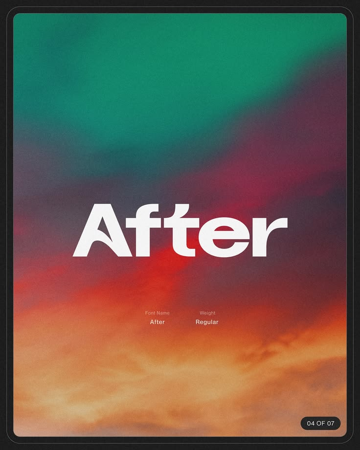
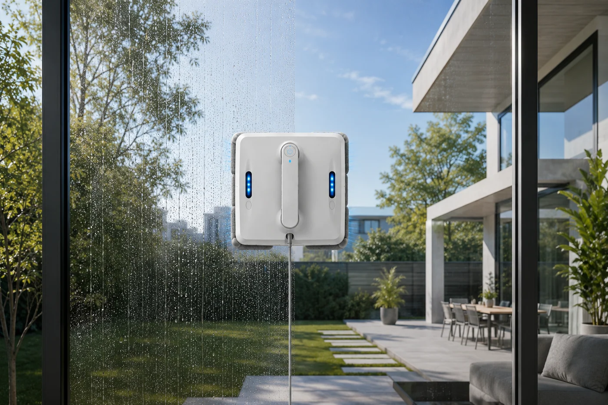
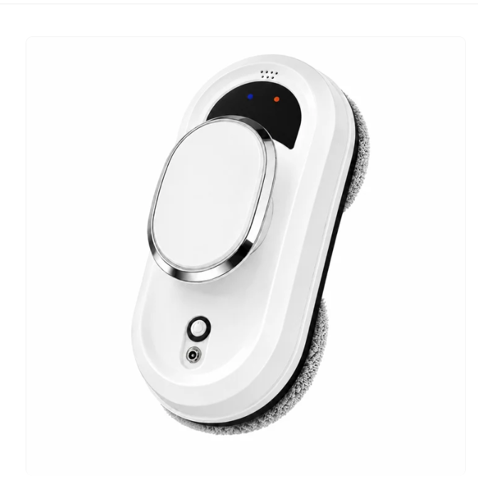
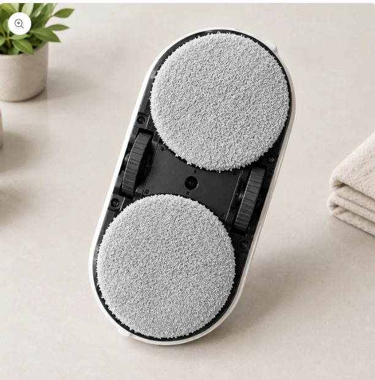
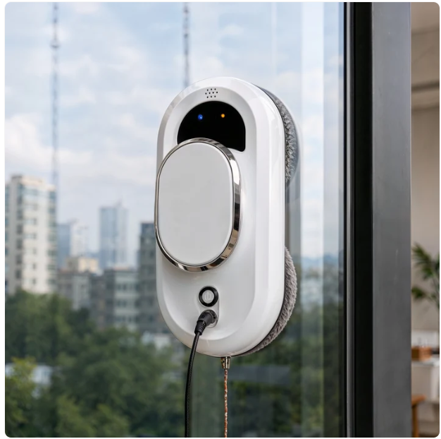

Une marque forte, une boutique qui vend vite. Ce deck fait le point sur la typo, les images et les vidéos avant la production Google Flow.
Retenu : After (titres) · Satoshi (texte)Même typo, même lumière, même cadrage sur le site, les pubs et les fiches. Le robot est toujours le héros de l'image.
Chaque écran porte un CTA, sous plusieurs formes : pilule, pastille ronde, barre collante, étiquette prix (planche 07).
Photos et vidéos générées dans Google Flow à partir des vraies photos du produit. Aucune fonction inventée, aucun résultat exagéré.

Le catalogue Fontshare compte 100 familles et aucune ne s'appelle After. La seule trace trouvée est « After Display » de Webhance (Ancy George), un seul style, en vente sur MyFonts à partir de 30 $.
On en retient l'esprit : capitales larges et pleines, détails taillés, et ce ciel granuleux en dégradé comme ambiance possible pour les pubs.
Le robot laveur de vitres qui grimpe à votre place.
Cabinet Grotesk Extrabold pour les titres, Satoshi pour le texte. Large, plein, premium, très lisible en petit.
Ajouter au panier →Le robot laveur de vitres qui grimpe à votre place.
Clash Display Semibold et General Sans. Plus tech et plus serré ; titres taillés, moins chaleureux.
Ajouter au panier →Le robot laveur de vitres qui grimpe à votre place.
Panchang Bold et Switzer. Très étendue, effet affiche ; à réserver aux mots courts.
Ajouter au panier →After Display (payante, à confirmer) pour le logo et les grands titres, Satoshi pour tout le reste.

Mise en situation : maison moderne, lumière de jour, pluie sur la vitre. Le niveau visé pour Flow.

Fond blanc, trois quarts. Sert d'image de référence pour Flow.

Les deux patins microfibre. Plan détail utile pour la fiche produit.

Fenêtre d'appartement, ville en fond. Bonne base, à refaire en plus grande définition.
Plans cinéma multi-angles : large, gros plan, contre-jour, ville. Le style des vidéos produit. 8 s, 720 × 1280.
Démo filmée à la maison : pose sur la vitre, cuisine, boîte. Rassure avant l'achat. 21 s.
Robot sur une tour au coucher du soleil. Belle lumière chaude, image moins nette. 15 s.
« Marque à 480 $ » : zone de protection du logo, motifs, badge, mises en situation. Le modèle de ce deck. 13 s.
Pilule dans l'encoche du hero, pastille ronde sur les visuels, étiquette prix posée sur les photos et les vidéos.
Contour ou lien souligné : elles mènent à une fiche, jamais au paiement.
Apparaît dès que le bouton du hero sort de l'écran.
After Display pour le logo et les titres, Satoshi pour le texte. Reste à acheter After avec une licence web et pub.
Jour clair et pluie (photo cible) ou lumière chaude de fin de journée (tour au coucher du soleil).
Garder le ciel granuleux en dégradé de l'affiche After comme fond de marque, oui ou non.
Q3 (haut de gamme, le hero) ou O1 (déjà les meilleures photos).